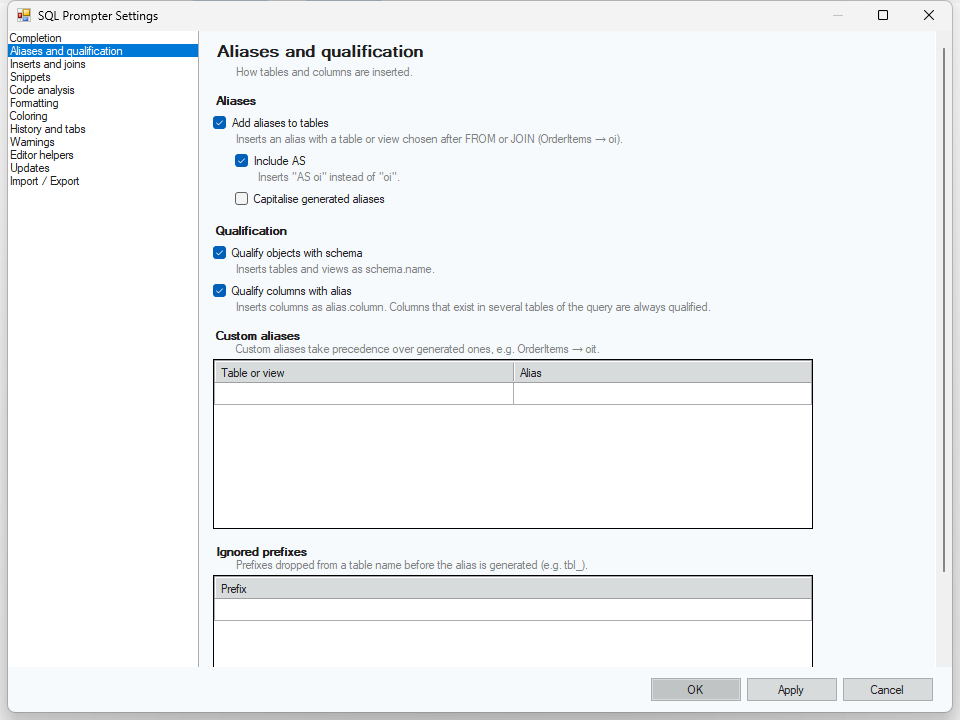
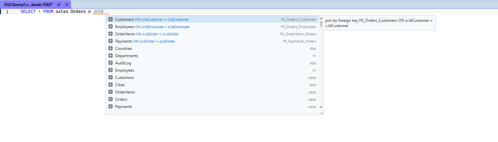
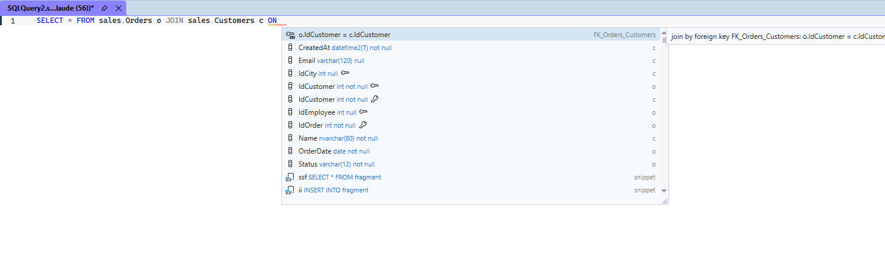

Aliases, INSERT, EXEC, joins
What choosing an item inserts beyond its name. Options are on the settings pages Aliases and qualification and Inserts and joins.
Aliases and qualification
After CROSS APPLY and OUTER APPLY only table-valued functions are offered. Choosing a table or view after FROM or JOIN also inserts an alias made of the initials of the name: OrderItems becomes sales.OrderItems AS oi. A clash with an alias already in the query gives oi1. No alias is added after INSERT INTO, UPDATE, DELETE FROM, for table-valued functions or when an alias is already typed.
Columns are inserted as alias.Column. A column that exists in several tables of the query is always qualified, whatever the option says.

| Option | Effect |
|---|---|
| Add aliases to tables | Insert the generated alias with a table or view. |
| Include AS | AS oi instead of oi. |
| Capitalise generated aliases | OI instead of oi. |
| Qualify objects with schema | Insert tables and views as schema.name. |
| Qualify columns with alias | Insert columns as alias.column. |
| Custom aliases | A table of table or view and alias; wins over the generated alias (OrderItems → oit). |
| Ignored prefixes | Prefixes dropped before the alias is generated (tbl_Orders → o with the prefix tbl_). |
Refactor > Qualify Object Names puts the schema in front of single-part names after FROM, JOIN, INTO, UPDATE, DELETE, TRUNCATE TABLE and EXEC in a whole script; CTE names, aliases, temporary tables, variables, system objects and unknown names stay. Add AS To Aliases and Remove AS From Aliases change the style of existing aliases.
JOIN and ON conditions

JOIN the tables related by a foreign key to the tables of the query come first, each with the whole clause; the key name is on the right, the description area explains it.Choosing the first entry inserts sales.Customers AS c ON o.IdCustomer = c.IdCustomer (the alias options apply). A foreign key over several columns is inserted joined by AND.

ON (and after AND / OR in the condition) the list starts with conditions that link the joined table to the tables before it.Conditions are ordered: the whole foreign key, then each of its columns, then columns with the same name. Columns of keys carry the key icon.
| Option (Inserts and joins) | Effect |
|---|---|
| New table on the left | o.IdUser = u.IdUser instead of u.IdUser = o.IdUser (o is the table being joined). By default the new table is on the right. |
| Foreign keys | Offer the condition of a foreign key. |
| Single columns of multi-column keys | Besides the whole condition, offer each column pair. |
| Columns with the same name | Offer a condition for every column name both tables have. |
| Same name needs the same type | Offer a name match only when both columns have the same type. |
INSERT
After INSERT INTO, choosing a table can insert it with the column list of its insertable columns (identity, computed and rowversion columns are left out). The option Column list chooses how:
- Insert the table with its column list (automatic).
- Offer an extra item "table (columns)" next to the plain table.
- Offer the list after typing ( behind the table.
Layout of the lists (one line, each on its own line, as many on a line as fit the editor) is used for column lists, VALUES and EXEC parameters. After the column list chooses a new line only, or VALUES with a placeholder per column: '' for text, N'' for Unicode text, 0 for numbers, NULL for nullable columns.
EXEC
After EXEC, choosing a procedure inserts all its parameters as @name = value (a default value as written), and DECLARE lines above the call for OUTPUT parameters. System procedures are offered too. Parameter info shows the signature while you fill them in.
In a call you typed by hand, @ after the procedure name (or after a comma) lists the parameters the call does not name yet, with type and default in the description; choosing one inserts @name = . Variables of the script follow the parameters.
Cross-database and linked-server names
- After
FROM, the databases of the server are offered next to the schemas.OtherDb.,OtherDb..andOtherDb.dbo.offer the objects of that database; they load in the background on first use, so the first try can be empty. A schema of the current database wins over a database of the same name. - Linked servers are offered after
FROM;Srv.lists its databases,Srv.Db.the schemas and objects, and a four-part source gets its columns. Each part loads in the background when you get there; a server that does not answer is only logged. - Synonyms are offered like tables; their columns come from the object they point to in the same database (chains included; targets in other databases or on other servers give no columns).
USE Saleson a line of its own makes completion follow that database from there on.- Not supported: columns of tables in other databases and of names with a server part (outside the four-part case above).